정보처리기사(구) (2012-03-04 기출문제)
1과목: 데이터 베이스
1. 속성(attribute)에 대한 설명으로 틀린 것은?
- 속성은 개체의 특성을 기술한다.
- 속성은 데이터베이스를 구성하는 가장 작은 논리적 단위이다.
- 속성은 파일 구조상 데이터 항목 또는 데이터 필드에 해당된다.
- 속성의 수를 “cardinality” 라고 한다.
(정답률: 73%)

2. 시스템 카탈로그에 대한 설명으로 틀린 것은?
- 시스템 카탈로그에 저장된 정보를 슈퍼 데이터(super data)라고 한다.
- 시스템 자신이 필요로 하는 스키마 및 여러 가지 객체에 관한 정보를 포함하고 있는 시스템 데이터베이스이다.
- 카탈로그들이 생성되면 자료 사전에 저장되기 때문에 좁은 의미로 자료 사전이라고도 한다.
- 시스템 카탈로그에 대한 사용자의 접근은 읽기 전용으로만 허용된다.
(정답률: 72%)
3. 릴레이션의 특징으로 옳지 않은 것은?
- 모든 튜플은 서로 다른 값을 갖는다.
- 각 속성은 릴레이션 내에서 유일한 이름을 가지며, 속성의 순서는 큰 의미가 없다.
- 하나의 릴레이션에서 튜플의 순서는 없다.
- 한 릴레이션에 나타난 속성 값은 논리적으로 더 이상 분해할 수 없는 원자 값이어서는 안 된다.
(정답률: 83%)
4. 정규형에 대한 설명으로 옳지 않은 것은?
- 제 2정규형은 반드시 제 1정규형을 만족해야 한다.
- 정규화 하는 것은 테이블을 결합하여 종속성을 제거하는 것이다.
- 제 1정규형은 릴레이션에 속한 모든 도메인이 원자값 만으로 되어 있는 릴레이션이다.
- BCNF는 강한 제 3정규형이라고도 한다.
(정답률: 67%)
5. 데이터베이스의 정의로 적합하지 않은 것은?
- integrated data
- individual data
- stored data
- operational data
(정답률: 77%)
6. 데이터베이스 무결성과 보안의 차이점에 대한 설명으로 가장 적합한 것은?
- 무결성은 권한이 있는 사용자로부터 데이터베이스를 보호하는 것이고, 보안은 권한이 없는 사용자로부터 데이터베이스를 보호하는 것이다.
- 무결성은 권한이 없는 사용자로부터 데이터베이스를 보호하는 것이고, 보안은 권한이 있는 사용자로부터 데이터베이스를 보호하는 것이다.
- 무결성과 보안은 모두 권한이 있는 사용자로부터 데이터베이스를 보호하는 것이지만, 보안은 사용자 계정과 비밀번호로 관리한다.
- 무결성과 보안은 모두 권한이 없는 사용자로부터 데이터베이스를 보호하는 것이지만, 무결성은 DBMS가 자동적으로 보장해 준다.
(정답률: 69%)
7. 계층형 데이터 모델에 대한 설명으로 옳지 않은 것은?
- 링크를 사용하여 자료와 자료사이의 관계성을 나타낸다.
- CODASYL DBTG 모델이라고도 한다.
- 각 레코드가 트리구조 형태로 구성된다.
- 데이터의 독립성이 보장된다.
(정답률: 54%)
8. Which of the following is not a component of Entity-Relationship diagram?
- Rectangles, which represent entity sets
- Ellipses, which represent database operations
- Diamond, which represent relationships among entity sets
- Lines, which link attributes to entity sets and entity sets to relationships
(정답률: 61%)
9. 순차 파일에 대한 설명으로 옳지 않은 것은?
- 일괄 처리에 적합한 구조이다.
- 기억장치에 대한 임의접근이나 순차접근이 모두 가능하다.
- 필요한 레코드의 삽입, 삭제, 수정시 파일을 재구성해야 한다.
- 파일 탐색시 효율이 좋다.
(정답률: 60%)
10. 동시성 제어를 위한 직렬화 기법으로 트랜잭션간의 순서를 미리 정하는 방법은?
- 로킹 기법
- 타임스탬프 기법
- 검증 기법
- 다중 버전 기법
(정답률: 62%)
11. 트랜잭션들을 수행하는 도중 장애로 인해 손상된 데이터베이스를 손상되기 이전의 정상적인 상태로 복구시키는 작업은?
- Recovery
- Restart
- Commit
- Abort
(정답률: 84%)
12. 다음과 같은 중위식 표현을 후위식으로 옳게 표현한 것은?
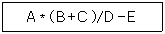
- + E ? A B * C D /
- A B C + * D / E -
- + D / * E ? A B C
- A B C + D / * E -
(정답률: 73%)
13. 다음은 관계 대수의 수학적 표현식이다. 해당되는 연산은?
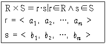
- 합집합
- 교집합
- 차집합
- 카티션 프로덕트
(정답률: 65%)
14. 다음 중 큐가 요구되는 작업으로 가장 적합한 것은?
- 작업 스케줄링
- 중위 표기식의 후위 표기 변환
- 함수 호출과 리턴
- 이진트리의 중위 순회
(정답률: 73%)
15. 다음 설명에 해당하는 스키마는?
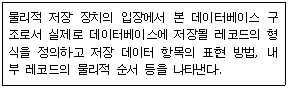
- internal schema
- conceptual schema
- external schema
- definition schema
(정답률: 76%)
16. 다음 자료에 대하여 버블 기법을 이용하여 오름차순으로 정렬하고자 한다. 2회전 후의 결과는?
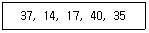
- 14, 17, 37, 35, 40
- 14, 37, 17, 40, 35
- 14, 17, 35, 37, 40
- 14, 17, 37, 40, 35
(정답률: 50%)
17. 데이터베이스의 설계 과정을 올바르게 나열한 것은?
- 요구조건 분석 → 개념적 설계 → 물리적 설계 → 논리적 설계
- 요구조건 분석 → 개념적 설계 → 논리적 설계 → 물리적 설계
- 요구조건 분석 → 논리적 설계 → 개념적 설계 → 물리적 설계
- 요구조건 분석 → 물리적 설계 → 개념적 설계 → 논리적 설계
(정답률: 82%)
18. 뷰에 대한 설명으로 옳지 않은 것은?
- 뷰는 삽입, 삭제, 갱신 연산에 제약사항이 없다.
- 뷰는 데이터 접근 제어로 보안을 제공한다.
- 뷰는 독자적인 인덱스를 가질 수 없다.
- 뷰는 데이터의 논리적 독립성을 제공한다.
(정답률: 74%)
19. 다음 설명의 ⓐ와 ⓑ에 들어갈 수 있는 가장 적합한 용어들로 구성된 것은?
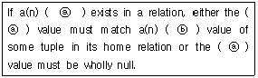
- ⓐ foreign key, ⓑ primary key
- ⓐ alternate key, ⓑ primary key
- ⓐ alternate key, ⓑ foreign key
- ⓐ primary key, ⓑ alternate key
(정답률: 61%)
20. 이행적 함수 종속 관계를 의미하는 것은?
- A→B 이고 B→C 일 때, A→C를 만족하는 관계
- A→B 이고 B→C 일 때, C→A를 만족하는 관계
- A→B 이고 B→C 일 때, B→A를 만족하는 관계
- A→B 이고 B→C 일 때, C→B를 만족하는 관계
(정답률: 83%)
2과목: 전자 계산기 구조
21. 다음 중 cycle stealing과 관계있는 것은?
- memory-mapped I/O
- isolated I/O
- interrupt-driven I/O
- DMA
(정답률: 56%)
22. 레지스터에 대한 설명으로 틀린 것은?
- 레지스터는 워드를 구성하는 비트 개수만큼의 플립플롭으로 구성된다.
- 여러 개의 플립플롭은 공통 클록의 입력에 의해 동시에 여러 비트의 입력 자료가 저장된다.
- 레지스터에 사용되는 플립플롭은 외부입력을 그대로 저장하는 T 플립플롭이 적당하다.
- 레지스터를 구성하는 플립플롭은 저장하는 값을 임의로 설정하기 위해 별도의 입력단자를 추가할 수 있으며, 저장값을 0 으로 하는 것을 설정해제(CLR)라 한다.
(정답률: 58%)
23. propagation delay에 대한 설명으로 옳지 않은 것은?
- gate상의 operating speed는 propagation delay에 비례한다.
- carry propagation은 ALU(arithmetic logic unit)path에서 가장 긴 delay를 말한다.
- 더 빠른 gate를 사용함으로써 propagation delay time을 줄일 수 있다.
- ALU의 parallel-adder에 carry propagation을 줄이기 위해 carry lock ahead를 사용한다.
(정답률: 35%)
24. 짝수 패리티 비트의 해밍 코드로 0011011을 받았을 때 오류가 수정된 정확한 코드는?
- 0111011
- 0001011
- 0011001
- 0010101
(정답률: 39%)
25. 1의 보수로 음수를 표현하는 방식에 비하여 2의 보수로 음수를 표현하는 방식의 특징으로 옳은 것은?
- 디지털 장치에서 음수화 구현이 쉽지 않다.
- 연산과정이 간단하다.
- 0 이 두 개이다.
- 4비트로 수를 표현하면 -7 ~ +7 범위의 수를 표현할 수 있다.
(정답률: 54%)
26. 플립플롭이 가지고 있는 기능은?
- 전송 기능
- 기억 기능
- 증폭 기능
- 전원 기능
(정답률: 64%)
27. 하드웨어의 특성상 주기억장치가 제공할 수 있는 정보 전달의 능력 한계를 무엇이라 하는가?
- 주기억장치 대역폭
- 주기억장치 접근율
- 주기억장치 접근 실패
- 주기억장치 사용의 편의성
(정답률: 71%)
28. 하드웨어 신호에 의하여 특정 번지의 서브루틴을 수행하는 것을 무엇이라 하는가?
- DMA
- vectored interrupt
- subroutine call
- handshaking mode
(정답률: 60%)
29. CPU에 의해 참조되는 각 주소는 가상주소를 주기억장치의 실제주소로 변환하여야 한다. 이것을 무엇이라 하는가?
- mapping
- blocking
- buffering
- interleaving
(정답률: 72%)
30. DMA(Direct Memory Access) 과정에서 인터럽트가 발생하는 시점은?
- DMA가 메모리 참조를 시작할 때
- DMA 제어기가 자료 전송을 종료했을 때
- 중앙처리장치가 DMA 제어기를 초기화할 때
- 사이클 훔침(cycle stealing)이 발생하는 순간
(정답률: 41%)
31. 다중처리기에 대한 설명으로 옳지 않은 것은?
- 수행속도의 성능 개선이 목적이다.
- 하나의 복합적인 운영체제에 의하여 전체 시스템이 제어된다.
- 각 프로세서의 기억장치만 있으며 공유 기억장치는 없다.
- 프로세서들 중 하나가 고장나도 다른 프로세서들에 의해 고장난 프로세서의 작업을 대신 수행하는 장애극복이 가능하다.
(정답률: 61%)
32. 명령어 파이프라이닝을 사용하는 목적은?
- 기억용량 증대
- 메모리 액세스의 효율증대
- CPU의 프로그램 처리속도 개선
- 입출력 장치의 증설
(정답률: 56%)
33. 프로그램이 가능한 논리소자로, n개의 입력에 대하여 2의 N승개 이하의 출력을 만들 수 있는 논리회로는?
- RAM
- ROM
- PLA
- pipeline register
(정답률: 54%)
34. 256 × 8 RAM 소자를 이용해서 2Kbyte의 용량을 갖는 메모리를 구성하려고 한다. 필요한 RAM 소자의 개수는?
- 8개
- 16개
- 24개
- 32개
(정답률: 45%)
35. 다음 그림은 입출력 시스템의 구성도이다. ①, ②, ③, ④의 내용을 순서대로 나열한 것은?
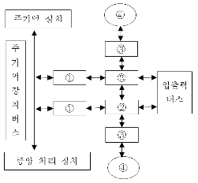
- 입출력 제어기, 입출력 장치제어기, 인터페이스, 입출력 장치
- 입출력 장치제어기, 입출력 제어기, 인터페이스, 입출력 장치
- 입출력 제어기, 인터페이스, 입출력 장치제어기, 입출력 장치
- 인터페이스, 입출력 장치제어기, 입출력 제어기, 입출력 장치
(정답률: 50%)
36. 반감산기에서 차를 얻기 위하여 사용하는 게이트는 EX-OR이다. 이 EX-OR와 같은 기능을 수행하기 위하여 필요한 게이트를 조합할 때, 필요한 게이트와 개수는?
- NOR Gate, 3개
- NAND gate, 5개
- OR Gate, 6개
- AND Gate, 6개
(정답률: 40%)
37. 다음은 DMA의 데이터 전송 절차를 나열한 것이다. 순서가 옳은 것은?
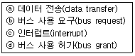
- ⓐ → ⓑ → ⓒ → ⓓ
- ⓒ → ⓑ → ⓓ → ⓐ
- ⓑ → ⓓ → ⓐ → ⓒ
- ⓓ → ⓒ → ⓑ → ⓐ
(정답률: 46%)
38. 어떤 computer의 메모리 용량은 1024 word이고 1 word는 16 bit로 구성되어 있다면 MAR과 MBR은 최소 몇 bit로 구성되어 있는가?
- MAR=10, MBR=8
- MAR=10, MBR=16
- MAR=11, MBR=8
- MAR=11, MBR=16
(정답률: 70%)
39. 인터럽트에 관한 설명으로 옳은 것은?
- 인터럽트가 발생했을 때 CPU의 상태는 보존하지 않아도 된다.
- 인터럽트가 발생하게 되면 CPU는 인터럽트 사이클이 끝날 때까지 동작을 멈춘다.
- 인터럽트 서비스 루틴을 실행할 때 인터럽트 플래그(IF)를 0으로 하면 인터럽트 발생을 방지할 수 있다.
- 인터럽트 서비스 루틴 처리를 수행한 후 이전에 수행 중이던 프로그램의 처음상태로 복귀한다.
(정답률: 45%)
40. 중앙 연산 처리장치의 하드웨어적인 요소가 아닌 것은?
- IR
- MAR
- MODEM
- PC
(정답률: 65%)
3과목: 운영체제
41. 파일 시스템의 기능이 아닌 것은?
- 파일의 생성, 변경, 제거
- 파일에 대한 여러 가지 접근 제어 방법 제공
- 정보 손실이나 파괴를 방지하기 위한 기능
- 고급 언어로 작성된 원시 프로그램의 번역
(정답률: 77%)
42. 일정량 또는 일정 기간 동안 데이터를 한꺼번에 모아서 처리하는 운영체제의 운영 기법은?
- 일괄 처리 시스템
- 다중 프로그래밍 시스템
- 시분할 시스템
- 실시간 처리 시스템
(정답률: 79%)
43. 프로세스 내에서의 작업 단위로서 시스템의 여러 자원을 할당받아 실행하는 프로그램의 단위를 의미하는 것은?
- Thread
- Working Set
- Semaphore
- Monitor
(정답률: 58%)
44. 4개의 페이지를 수용할 수 있는 주기억장치가 있으며, 초기에는 모두 비어 있다고 가정한다. 다음의 순서로 페이지 참조가 발생할 때, LRU 페이지 교체 알고리즘을 사용할 경우 몇 번의 페이지 결함이 발생하는가?
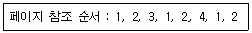
- 3
- 4
- 5
- 6
(정답률: 63%)
45. 다중 처리기 운영체제 형태 중 주/종(Master/Slave) 처리기에 대한 설명으로 틀린 것은?
- Slave 만이 운영체제를 수행할 수 있다.
- Master에 문제가 발생하면 입출력 작업을 수행할 수 없다.
- 비대칭 구조를 갖는다.
- 하나의 처리기를 Master로 지정하고 다른 처리기들은 Slave로 지정한다.
(정답률: 76%)
46. 프로세스의 정의와 거리가 먼 것은?
- 프로세서가 할당되는 실체
- PCB를 가진 프로그램
- 프로시저가 활동 중인 것
- 동기적 행위를 일으키는 주체
(정답률: 69%)
47. NUR(Not-Used-Recently) 페이지 교체방법에서 가장 우선적으로 교체 대상이 되는 것은?
- 참조되고 변형된 페이지
- 참조는 안 되고 변형된 페이지
- 참조는 되었으나 변형 안 된 페이지
- 참조도 안 되고 변형도 안 된 페이지
(정답률: 63%)
48. 디스크 스케줄링의 목적과 거리가 먼 것은?
- 처리율 극대화
- 평균 반응 시간의 단축
- 응답시간 편차의 최소화
- 디스크 공간 확보
(정답률: 67%)
49. 메모리 관리 기법 중 Worst fit 방법을 사용할 경우 10K 크기의 프로그램 실행을 위해서는 어느 부분이 할당되는가?
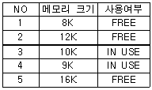
- NO. 2
- NO. 3
- NO. 4
- NO. 5
(정답률: 76%)
50. 어셈블러를 두 개의 패스(pass)로 구성하는 주된 이유는?
- 한 개의 패스만을 사용하면 프로그램의 크기가 증가하여 유지보수가 어렵기 때문
- 한 개의 패스만을 사용하면 프로그램의 크기가 증가하여 처리속도가 감소하기 때문
- 한 개의 패스만을 사용하면 기호를 모두 정의한 뒤에 해당 기호를 사용해야만 하기 때문
- 패스 1, 2의 어셈블러 프로그램이 작아서 경제적이기 때문
(정답률: 47%)
51. 분산 처리 운영체제 시스템을 설계하는 주된 이유가 아닌 것은?
- 신뢰도 향상
- 자원 공유
- 보안의 향상
- 연산 속도 향상
(정답률: 72%)
52. HRN(Highest Response Scheduling) 스케줄링 기법에서 우선순위 결정 방법은?
- (대기시간 + 서비스 시간) / 대기시간
- (대기시간 + 서비스 시간) / 서비스시간
- 대기시간 / (대기 시간 + 서비스 시간)
- 서비스 시간 / 본문 (대기 시간 + 서비스 시간)
(정답률: 72%)
53. 분산 운영체제의 구조 중 다음 설명에 해당하는 것은?
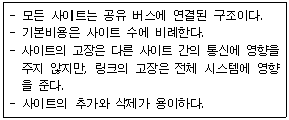
- Multi-access Bus Connection
- Hierarchy Connection
- Star Connection
- Ring Connection
(정답률: 61%)
54. 다음 설명에 해당하는 디렉토리 구조는?
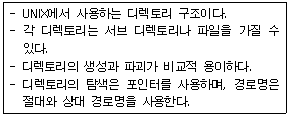
- 비순환 그래프 디렉토리 구조
- 1단계 디렉토리 구조
- 트리 디렉토리 구조
- 2단계 디렉토리 구조
(정답률: 66%)
55. UNIX에서 현재 디렉토리 내의 파일 목록을 확인하는 명령어는?
- ls
- cat
- fcsk
- cp
(정답률: 69%)
56. UNIX 파일 시스템 구조에서 디렉토리별 디렉토리 엔트리와 실제 파일에 대한 데이터가 저장된 블록은?
- I-node 블록
- 슈퍼 블록
- 부트 블록
- 데이터 블록
(정답률: 52%)
57. 교착상태의 해결 방법 중 정유 및 대기 조건 방지, 비선점 조건 방지, 환형 대기 조건 방지와 가장 밀접한 관계가 있는 것은?
- Prevention
- Avoidance
- Detection
- Recovery
(정답률: 64%)
58. UNIX에서 커널에 대한 설명으로 틀린 것은?
- UNIX 시스템의 중심부에 해당한다.
- 사용자의 명령을 수행하는 명령어 해석기이다.
- 프로세스 관리, 기억장치 관리 등을 담당한다.
- 컴퓨터 부팅시 주기억장치에 적재되어 상주하면서 실행된다.
(정답률: 67%)
59. 파일 디스크립터(File Descriptor)에 대한 설명으로 틀린 것은?
- 파일 디스크립터의 내용에는 파일의 ID 번호, 디스크 내 주소, 파일 크기 등에 대한 정보가 수록된다.
- 파일이 엑세스되는 동안 운영체제가 관리 목적으로 알아야 할 정보를 모아 놓은 자료구조이다.
- 해당 파일이 Open되면 FCB(File Control Block)가 메모리에 올라와야 한다.
- 모든 시스템에 동일한 자료구조를 갖는다.
(정답률: 67%)
60. 운영체제의 성능 평가 기준과 거리가 먼 것은?
- Throughput
- Reliability
- Integrity
- Turn Around Time
(정답률: 46%)
4과목: 소프트웨어 공학
61. 공학적으로 잘된 소프트웨어 시스템의 특성이 아닌 것은?
- 소프트웨어는 효율적이어야 한다.
- 소프트웨어는 신뢰성이 높아야 한다.
- 소프트웨어는 유지보수가 쉽고 비용이 증가되어야 한다.
- 사용자 수준에 맞는 적당한 인터페이스를 제공해야 한다.
(정답률: 77%)
62. 럼바우의 분석 기법 중 자료 흐름도를 이용하는 것은?
- 기능 모델링
- 동적 모델링
- 객체 모델링
- 정적 모델링
(정답률: 49%)
63. 검증(Validation) 검사 기법 중 개발자의 장소에서 사용자가 개발자 앞에서 행해지며, 오류와 사용상의 문제점을 사용자와 개발자가 함께 확인하면서 검사하는 기법은?
- 디버깅 검사
- 형상 검사
- 베타 검사
- 알파 검사
(정답률: 61%)
64. 소프트웨어의 개발 영역을 결정하는 주요 요소 중 다음사항과 관계되는 것은?
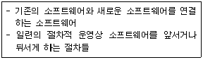
- 기능
- 성능
- 인터페이스
- 제약조건
(정답률: 64%)
65. 유지보수의 종류 중 소프트웨어 테스팅 동안 밝혀지지 않은 모든 잠재적인 오류를 수정하기 위한 보수 형태로서 오류의 수정과 진단 과정이 포함되는 것은?
- Perfective maintenance
- Adaptive maintenance
- Preventive maintenance
- Corrective maintenance
(정답률: 53%)
66. 소프트웨어 품질 목표 중 하나 이상의 하드웨어 환경에서 운용되기 위해 쉽게 수정될 수 있는 시스템 능력을 의미하는 것은?
- Efficiency
- Reliability
- Usability
- Portability
(정답률: 54%)
67. 한 모듈 내의 각 구성 요소들이 공통의 목적을 달성하기 위하여 서로 얼마나 관련이 있는지의 기능적 연관의 정도를 나타내는 것은?
- coupling
- cohesion
- structure
- unity
(정답률: 54%)
68. 소프트웨어 재사용에 대한 설명으로 틀린 것은?
- 새로운 개발 방법론의 도입이 용이하다.
- 개발 시간과 비용이 감소한다.
- 프로그램 생성 지식을 공유할 수 있다.
- 기존 소프트웨어에 재사용 소프트웨어를 추가하기 어려운 문제점이 발생할 수 있다.
(정답률: 65%)
69. S/W Project 일정이 지연된다고 해서 Project 말기에 새로운 인원을 추가 투입하면 Project는 더욱 지연되게 된다는 내용과 관련되는 법칙은?
- Putnam의 법칙
- Mayer의 법칙
- Brooks의 법칙
- Boehm의 법칙
(정답률: 68%)
70. 객체 지향의 기본 개념 중 객체가 메시지를 받아 실행해야 할 객체의 구체적인 연산을 정의한 것은?
- 메소드
- 클래스
- 메시지
- 실체
(정답률: 67%)
71. 정형 기술 검토의 지침 사항으로 틀린 것은?
- 제품의 검토에만 집중한다.
- 문제 영역을 명확히 표현한다.
- 참가자의 수를 제한하고 사전 준비를 강요한다.
- 논쟁이나 반박을 제한하지 않는다.
(정답률: 69%)
72. 화이트박스 검사 기법 중 프로그램 내의 변수 정의의 위치와 변수들의 사용에 따라 프로그램 검사 경로를 선택하는 구조 검사 방법은?
- Basic Path Test
- Data Flow Test
- Condition Test
- Loop Test
(정답률: 41%)
73. 소프트웨어 위기 발생 요인으로 거리가 먼 것은?
- 개발 예산의 초과
- 개발 일정의 지연
- 소프트웨어 품질의 미흡
- 신기술에 대한 지속적 교육
(정답률: 71%)
74. 바람직한 소프트웨어 설계 지침으로 볼 수 없는 것은?
- 특정 기능을 수행하는 논리적 요소들로 분리되는 구조를 가지도록 한다.
- 적당한 모듈의 크기를 유지한다.
- 강한 결합도, 약한 응집도를 유지한다.
- 모듈 간의 접속 관계를 분석하여 복잡도와 중복을 줄인다.
(정답률: 76%)
75. 형상관리(Configuration management)의 관리 항목과 거리가 먼 것은?
- 정의 단계의 문서
- 개발 단계의 문서와 프로그램
- 유지보수 단계의 변경 사항
- 소프트웨어 개발 인력
(정답률: 69%)
76. 자료흐름도의 구성 요소와 표시 기호의 연결이 틀린 것은?
- 종착지(terminator) : 오각형
- 자료흐름(data flow) : 화살표
- 처리공정(process) : 원
- 자료저장소(data store) : 직선(평행선)
(정답률: 61%)
77. CASE에 대한 설명으로 거리가 먼 것은?
- 개발도구와 개발 방법론이 결합된 것이다.
- 시스템 개발과정의 일부 또는 전체를 자동화하는 것이다.
- 기존 소프트웨어를 다른 운영체제나 하드웨어 환경에서 사용할 수 있도록 변환하는 작업이다.
- 정형화된 구조 및 메커니즘을 소프트웨어 개발에 적용하여 소프트웨어 생산성 향상을 구현하는 공학기법이다.
(정답률: 55%)
78. 프로젝트 관리의 대상으로 거리가 먼 것은?
- 비용관리
- 일정관리
- 고객관리
- 품질관리
(정답률: 68%)
79. 소프트웨어의 위기를 해결하기 위해 개발의 생산성이 아닌 유지보수의 생산성으로 해결하려는 방법을 의미하는 것은?
- 소프트웨어 재사용
- 소프트웨어 재공학
- 클라이언트/서버 소프트웨어 공학
- 전통적 소프트웨어 공학
(정답률: 63%)
80. 객체지향 기법 중 다음 설명이 의미하는 것은?
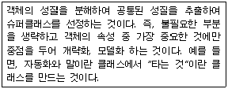
- Inheritance
- Abstraction
- Polymorphism
- Encapsulation
(정답률: 42%)
5과목: 데이터 통신
81. TCP/IP 관련 프로토콜 중 인터넷 계층에 해당하는 것은?
- SMNP
- HTTP
- SMTP
- ICMP
(정답률: 42%)
82. OSI 7계층 중 암호화, 코드변환, 데이터 압축의 역할을 담당하는 계층은?
- Data link Layer
- Application Layer
- Presentation Layer
- Session Layer
(정답률: 42%)
83. 블루투스(Bluetooth)에 대한 설명으로 틀린 것은?
- 양방향 통신을 위해 FDD 방식을 사용한다.
- 2.4GHz의 ISM 밴드를 이용한다.
- 회로 구성을 간략화 할 수 있다.
- 간섭에 비교적 강한 주파수 호핑 방식을 채용한다.
(정답률: 39%)
84. 일반적으로 데이터 통신의 전송제어 절차에 해당되지 않는 것은?
- 통신 회선 접속
- 데이터 링크 설정
- 데이터 구조의 확인
- 통신 회선 절단
(정답률: 68%)
85. IPv4에서 IPv6로의 천이를 위해 IETF에 의해 고안된 전략으로 옳은 것은?
- Tunneling
- Mobile IP
- Hop Limit
- Header Extension
(정답률: 65%)
86. HTTP(Hyper Text Transfer Protocol)에 대한 설명으로 틀린 것은?
- 클라이언트 프로그램과 서버 프로그램으로 구현된다.
- 지속(persistent)연결과 비 지속(nonpersistent)연결 두 가지를 모두 허용한다.
- HTTP 명세서 1.0(RFC 1945)과 1.6(RFC 2616)에서 HTTP의 메시지 형식을 정의한다.
- WWW(World Wide Web)에서 데이터를 액세스하는데 이용되는 프로토콜이다.
(정답률: 38%)
87. 데이터 전송 중 한 비트에 에러가 발생했을 경우 이를 수신측에서 정정할 목적으로 사용되는 것은?
- P/F
- HRC
- Checksum
- Hamming code
(정답률: 64%)
88. 다음 설명에 해당하는 통신망은?
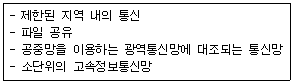
- 종합정보통신망(ISDN)
- 부가가치통신망(VAN)
- 근거리통신망(LAN)
- 가입전산망(Teletex)
(정답률: 74%)
89. 효율적인 전송을 위하여 넓은 대역폭(혹은 고속 전송 속도)을 가진 하나의 전송링크를 통하여 여러 신호(혹은 데이터)를 동시에 실어 보내는 기술은?
- 회선 제어
- 다중화
- 데이터 처리
- 전위 처리기
(정답률: 72%)
90. 시분할 다중화(TDM)의 설명으로 옳은 것은?
- 여러 신호를 전송매체의 서로 다른 주파수 대역을 이용하여 동시에 전송하는 기술이다.
- 동기식 시분할 다중화는 한 전송회선의 대역폭을 일정한 시간 단위로 나누어 각 채널에 할당하는 방식이다.
- 동기식 시분할 다중화는 대역폭을 감소시키는 효과가 있어, 전체적인 전송 시스템의 성능이 향상되는 장점이 있다.
- 비동기식 시분할 다중화는 헤더 정보를 필요로 하지 않으므로, 동기식 시분할 다중화에 비해 시간 슬롯당 정보 전송률이 증가한다.
(정답률: 57%)
91. HDLC의 동작 모드 중 전이중 전송의 점대점 균형 링크 구성에 사용되는 것은?
- PAM
- ABM
- NRM
- ARM
(정답률: 37%)
92. 문자 동기 전송방식에서 데이터 투과성(Data Transparent)을 위해 삽입되는 제어문자는?
- ETX
- STX
- DLE
- SYN
(정답률: 57%)
93. 회선 교환(circuit switching)에 대한 설명으로 옳지 않은 것은?
- 송신스테이션과 수신스테이션 사이에 데이터를 전송하기 전에 먼저 교환기를 통해 물리적으로 연결이 이루어져야 한다.
- 음성이나 동영상과 같이 연속적이면서 실시간 전송이 요구되는 멀티미디어 전송 및 에러 제어와 복구에 적합하다.
- 현재 널리 사용되고 있는 전화시스템을 대표적인 예로 들 수 있다.
- 송신과 수신스테이션 간에 호 설정이 이루어지고 나면 항상 정보를 연속적으로 전송할 수 있는 전용 통신로가 제공되는 셈이다.
(정답률: 58%)
94. 비동기 전송에 대한 설명으로 틀린 것은?
- 비동기 전송에서 수신기는 자신의 클록 신호를 사용하여 회선을 샘플링하고 각 비트의 값을 읽어내는 방식이다.
- 문자 전송 시 맨 앞에 시작을 알리기 위한 start bit를 두고, 맨 뒤에는 종료를 알리는 stop bit를 둔다.
- 어떤 문자라도 전송되지 않을 때는 통신 회선은 휴지(idle) 상태가 된다.
- 송수신기의 클록 오차에 의한 오류 발생을 줄이기 위해 짧은 비트열은 전송하지 않음으로써 타이밍 오류를 피한다.
(정답률: 51%)
95. X.25 프로토콜의 계층 구조에 포함되지 않는 것은?
- 패킷 계층
- 링크 계층
- 물리 계층
- 네트워크 계층
(정답률: 50%)
96. IEEE 802 표준모델에 대해 옳게 연결된 것은?
- 802.2 - 토큰버스
- 802.5 - 토큰링
- 802.4 - LLC
- 802.6 - CSMA/CD
(정답률: 60%)
97. 프로토콜의 기본 구성 요소가 아닌 것은?
- entity
- syntax
- semantic
- timing
(정답률: 48%)
98. 협대역 ISDN에서 사용하는 D채널의 기능에 해당하는 것은?
- 회선 교환 방식을 위한 신호기능 정보의 전송
- 1536Kbps의 사용자 정보 전송
- 고속 팩시밀리, 화상 회의와 같은 고속정보 전송
- 패킷 교환방식에 의한 384Kbps 이하의 정보 전송
(정답률: 30%)
99. OSI 7계층 중 데이터 링크 계층에 해당하는 프로토콜이 아닌 것은?
- PPP
- LLC
- HDLC
- UDP
(정답률: 59%)
100. 다음 설명이 해당하는 다중접속방식은?
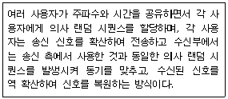
- FDMA
- CDMA
- TDMA
- SFMA
(정답률: 44%)